This study asks how increasing long-context length affects factual reliability when an LLM must answer factual questions from authentic but competing primary-source records. The benchmark used 500 question families across SEC, FDA/Drugs@FDA, ClinicalTrials.gov, and FRED/ALFRED. Each family was evaluated at 4K, 8K, 16K, 32K, 64K, and an empirically hardware-bounded 82K condition.
Core result. Overall inaccuracy increased from 49.6% at 4K to 70.7% at 82K. GEE OR per 2x rendered context = 1.232, 95% CI [1.178, 1.288], p = 8.66 x 10^-20. Grounded Inaccuracy increased strongly. Hallucinatory Inaccuracy increased in the full dataset, but after excluding UNANSWERABLE tasks it decreased, indicating the full-dataset hallucination trend is driven primarily by failed abstention.
The central research question is: how does increasing context length affect factual reliability when an LLM must retrieve and reason over authentic but competing contextual records? A single hallucination rate is insufficient because long-context failures may come from unsupported fabrication, selection of the wrong legitimate contextual fact, wrong entity/temporal/version binding, calculation mistakes, or failure to abstain.
Every successful response is classified as Correct, Hallucinatory Inaccuracy, or Grounded Inaccuracy. Inaccuracy is the sum of Hallucinatory Inaccuracy and Grounded Inaccuracy. Runtime failures are separate and are not factual inaccuracies.
The benchmark uses four authoritative primary-source domains. Authentic records were used to construct target evidence, deterministic gold answers, same-domain distractors, temporal competitors, version competitors, entity competitors, series/unit competitors, and unanswerable cases.
Table 1. Authoritative source domains.
| Domain | Families | Role |
|---|---|---|
| SEC | 125 | Company financial filings, concepts, periods, units, versions |
| FDA / Drugs@FDA | 125 | Drug application/product records, strengths, dosage forms, routes |
| ClinicalTrials.gov | 125 | Trial identifiers, statuses, dates, arms, posted results |
| FRED / ALFRED | 125 | Economic time series, vintages, units, seasonal/series variants |
The benchmark contains 400 answerable families and 100 unanswerable families. The same question, gold answer, evidence policy, and answerability are preserved across all context lengths within a family.
Table 2. Question-type distribution.
| Question Type | Families | Purpose |
|---|---|---|
| DIRECT_RETRIEVAL | 100 | Retrieve one explicitly requested fact from competing records |
| RETRIEVAL_CALCULATION | 150 | Retrieve multiple operands and compute a deterministic result |
| TEMPORAL_VERSION | 55 | Select the correct date, period, or version among competitors |
| ENTITY_UNIT_BINDING | 95 | Bind a requested value to the correct entity, unit, or series |
| UNANSWERABLE | 100 | Return INSUFFICIENT_EVIDENCE when required evidence is absent |
| Total | 500 |
The context ladder is 4K, 8K, 16K, 32K, 64K, and 82K. The 82K condition is not a doubling of 64K; models therefore used actual log2 rendered input tokens.
Table 3. Mean rendered input tokens by context condition.
| Context | Mean Rendered Input Tokens |
|---|---|
| 4K | 4,273.3 |
| 8K | 8,330.6 |
| 16K | 16,442.3 |
| 32K | 32,671.4 |
| 64K | 65,126.1 |
| 82K | 81,745.1 |
The frozen benchmark has 3,000 attempted inference instances. There were 2,998 successful generations and two CUDA OOM runtime failures, both at 82K. The OOM cases were excluded from factual-outcome denominators.
The model was meta-llama/Llama-3.2-3B-Instruct, revision 0cb88a4f764b7a12671c53f0838cd831a0843b95, run on an NVIDIA GeForce RTX 4090 with BF16, batch size 1, standard Hugging Face DynamicCache, greedy decoding, do_sample=False, num_beams=1, max_new_tokens=128, no quantization, no cache offloading, and no model offloading. The prompt was llama_chat_v4, prompt hash 5d2869822989e19b, with frozen date 09 Aug 2026. Successful outputs had zero malformed outputs, zero 128-token cap hits, and zero repetitive/degenerate outputs.
Grading was deterministic. The frozen grader hash was d9282a0ccc50daba3bfd232c058dfbab63a5c19a7323d585a7c2236b3a6c4ba8. Nineteen cases were manually adjudicated under the frozen rules: seven correct grader edge cases and twelve grounded WRONG_ENTITY cases. No manual case was converted to hallucination.
Table 4. Final factual-outcome totals.
| Outcome | Count |
|---|---|
| Correct | 1176 |
| Inaccurate | 1822 |
| Hallucinatory Inaccuracy | 1132 |
| Grounded Inaccuracy | 690 |
| Runtime Failures | 2 |
| Ambiguous | 0 |
Table 5. Primary factual-reliability results by context.
| Context | Gradable N | Correct | Inaccurate | Inaccuracy 95% CI | Hallucinatory Inaccuracy | Grounded Inaccuracy | Runtime Failures | Mean Latency |
|---|---|---|---|---|---|---|---|---|
| 4K | 500 | 50.4% | 49.6% | 45.2%-54.0% | 34.2% | 15.4% | 0 | 0.316 s |
| 8K | 500 | 45.6% | 54.4% | 50.0%-58.8% | 37.2% | 17.2% | 0 | 0.598 s |
| 16K | 500 | 41.2% | 58.8% | 54.4%-63.2% | 34.8% | 24.0% | 0 | 1.212 s |
| 32K | 500 | 38.4% | 61.6% | 57.4%-65.8% | 38.2% | 23.4% | 0 | 2.842 s |
| 64K | 500 | 30.4% | 69.6% | 65.6%-73.6% | 41.8% | 27.8% | 0 | 7.827 s |
| 82K | 498 | 29.3% | 70.7% | 66.6%-74.7% | 40.4% | 30.3% | 2 | 11.260 s |
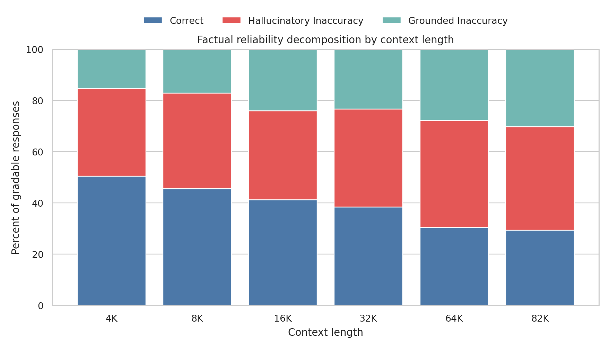
The primary model was GEE logistic regression with outcome inaccurate, predictor log2(rendered_input_tokens), and clustering by question_family_id. Each +1 increase corresponds to a doubling of rendered context. OR = 1.232, 95% CI [1.178, 1.288], p = 8.66 x 10^-20. This is an odds increase, not a percentage-point increase.
Table 6. GEE trend models.
| Outcome | OR per 2x Context | 95% CI | p-value | Interpretation |
|---|---|---|---|---|
| Overall Inaccuracy | 1.232 | [1.178, 1.288] | 8.66e-20 | Odds ratio per doubling of rendered input tokens |
| Hallucinatory Inaccuracy | 1.070 | [1.027, 1.115] | 0.00133 | Odds ratio per doubling of rendered input tokens |
| Grounded Inaccuracy | 1.215 | [1.153, 1.280] | 3.34e-13 | Odds ratio per doubling of rendered input tokens |
| Hallucinatory vs Grounded Among Inaccuracies | 0.936 | [0.897, 0.977] | 0.00249 | Odds ratio per doubling of rendered input tokens |
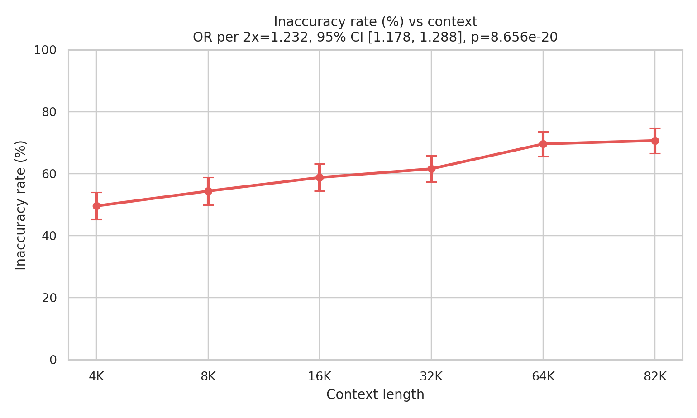
Hallucinatory Inaccuracy increased in the full benchmark from 34.2% at 4K to 40.4% at 82K. GEE OR = 1.070, 95% CI [1.027, 1.115], p = 0.00133. This full-dataset result must be interpreted with the UNANSWERABLE sensitivity analysis.
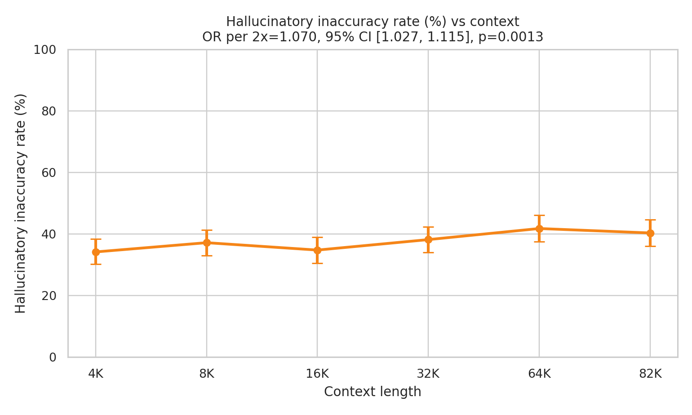
Grounded Inaccuracy increased from 15.4% at 4K to 30.3% at 82K. GEE OR = 1.215, 95% CI [1.153, 1.280], p = 3.34 x 10^-13. These are legitimate contextual values bound or reasoned over incorrectly.
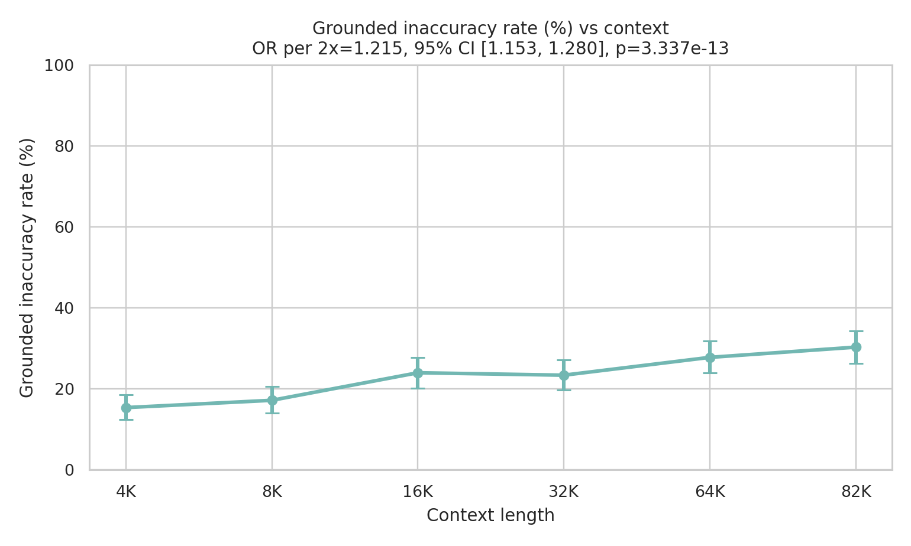
Table 7. Trend models after excluding UNANSWERABLE families.
| Outcome | OR | 95% CI | p-value |
|---|---|---|---|
| inaccurate | 1.129 | [1.081, 1.180] | 5.30e-08 |
| hallucinatory_inaccuracy | 0.942 | [0.906, 0.980] | 0.00275 |
| grounded_inaccuracy | 1.234 | [1.166, 1.306] | 2.66e-13 |
After excluding UNANSWERABLE families, overall inaccuracy and grounded inaccuracy still increased, while Hallucinatory Inaccuracy decreased. The full-dataset increase in Hallucinatory Inaccuracy is therefore driven primarily by failed abstention on unanswerable tasks.
Table 8. Complete-case trend models using 498 families and 2,988 observations.
| Outcome | OR | 95% CI | p-value |
|---|---|---|---|
| inaccurate | 1.232 | [1.178, 1.289] | 8.14e-20 |
| hallucinatory_inaccuracy | 1.072 | [1.028, 1.117] | 0.00105 |
| grounded_inaccuracy | 1.213 | [1.151, 1.278] | 4.69e-13 |
Conclusions were unchanged.
All higher contexts were significant versus 4K for overall inaccuracy after Holm correction. Hallucinatory Inaccuracy was significant for 4K vs 8K, 64K, and 82K. Grounded Inaccuracy was significant for 4K vs 16K, 32K, 64K, and 82K.
Table 9. Paired McNemar comparisons against 4K.
| Outcome | Comparison | Paired N | Rate Difference (pp) | 4K=0, Higher=1 | 4K=1, Higher=0 | Raw p | Holm p | Holm Significant |
|---|---|---|---|---|---|---|---|---|
| inaccurate | 4K_vs_8K | 500 | 4.8 | 41 | 17 | 0.00223 | 0.00223 | True |
| inaccurate | 4K_vs_16K | 500 | 9.2 | 66 | 20 | 6.67e-07 | 1.33e-06 | True |
| inaccurate | 4K_vs_32K | 500 | 12.0 | 88 | 28 | 2.09e-08 | 6.27e-08 | True |
| inaccurate | 4K_vs_64K | 500 | 20.0 | 124 | 24 | 1.89e-17 | 7.57e-17 | True |
| inaccurate | 4K_vs_82K | 498 | 21.3 | 129 | 23 | 4.33e-19 | 2.17e-18 | True |
| hallucinatory_inaccuracy | 4K_vs_8K | 500 | 3.0 | 24 | 9 | 0.01353 | 0.04059 | True |
| hallucinatory_inaccuracy | 4K_vs_16K | 500 | 0.6 | 35 | 32 | 0.80719 | 0.80719 | False |
| hallucinatory_inaccuracy | 4K_vs_32K | 500 | 4.0 | 51 | 31 | 0.03524 | 0.07048 | False |
| hallucinatory_inaccuracy | 4K_vs_64K | 500 | 7.6 | 75 | 37 | 0.00042 | 0.0021 | True |
| hallucinatory_inaccuracy | 4K_vs_82K | 498 | 6.4 | 69 | 37 | 0.00244 | 0.00976 | True |
| grounded_inaccuracy | 4K_vs_8K | 500 | 1.8 | 39 | 30 | 0.33556 | 0.33556 | False |
| grounded_inaccuracy | 4K_vs_16K | 500 | 8.6 | 68 | 25 | 9.38e-06 | 2.81e-05 | True |
| grounded_inaccuracy | 4K_vs_32K | 500 | 8.0 | 70 | 30 | 7.85e-05 | 0.00016 | True |
| grounded_inaccuracy | 4K_vs_64K | 500 | 12.4 | 90 | 28 | 8.91e-09 | 3.57e-08 | True |
| grounded_inaccuracy | 4K_vs_82K | 498 | 14.9 | 96 | 22 | 3.26e-12 | 1.63e-11 | True |
Table 10. Question-type outcome rates at 4K and 82K.
| Question Type | 4K Inaccuracy | 82K Inaccuracy | 4K Hallucinatory | 82K Hallucinatory | 4K Grounded | 82K Grounded |
|---|---|---|---|---|---|---|
| DIRECT_RETRIEVAL | 24.0% | 37.0% | 0.0% | 1.0% | 24.0% | 36.0% |
| ENTITY_UNIT_BINDING | 25.3% | 50.5% | 4.2% | 2.1% | 21.1% | 48.4% |
| RETRIEVAL_CALCULATION | 94.0% | 89.9% | 78.0% | 64.9% | 16.0% | 25.0% |
| TEMPORAL_VERSION | 18.2% | 67.3% | 1.8% | 9.1% | 16.4% | 58.2% |
| UNANSWERABLE | 49.0% | 97.0% | 49.0% | 97.0% | 0.0% | 0.0% |
UNANSWERABLE failures rose from approximately 49.0% to 97.0%, explaining much of the full-dataset Hallucinatory Inaccuracy increase. TEMPORAL_VERSION inaccuracy rose from approximately 18.2% to 67.3%, indicating temporal/version confusion. These subgroup results are exploratory.
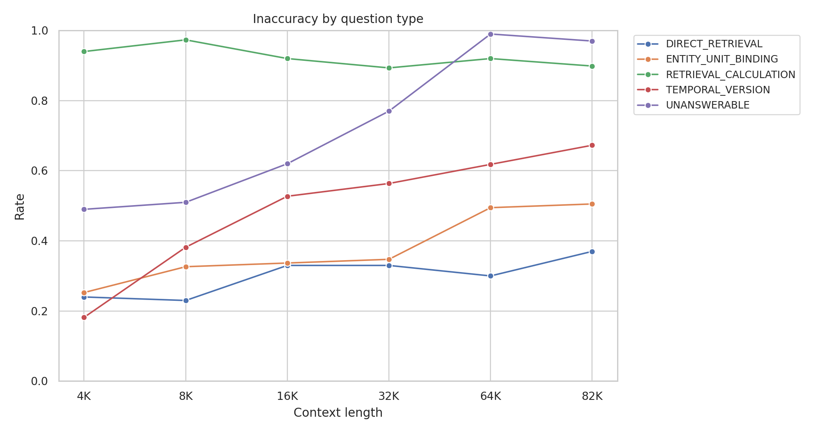
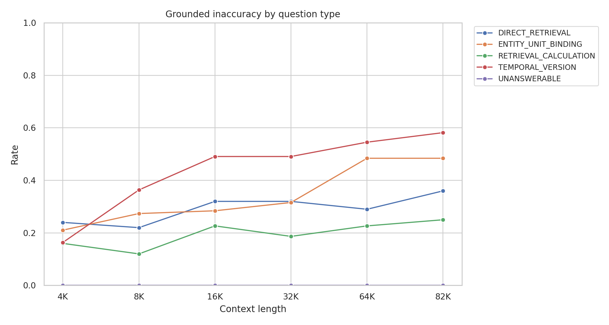
Table 11. Domain outcome rates at 4K and 82K.
| Domain | 4K Inaccuracy | 82K Inaccuracy | 4K Hallucinatory | 82K Hallucinatory | 4K Grounded | 82K Grounded |
|---|---|---|---|---|---|---|
| CLINICAL_TRIALS | 44.0% | 59.2% | 40.8% | 36.8% | 3.2% | 22.4% |
| FDA | 58.4% | 62.4% | 53.6% | 44.8% | 4.8% | 17.6% |
| FRED | 43.2% | 79.0% | 20.8% | 36.3% | 22.4% | 42.7% |
| SEC | 52.8% | 82.3% | 21.6% | 43.5% | 31.2% | 38.7% |
SEC and FRED showed the largest overall inaccuracy increases. FDA was comparatively flatter. ClinicalTrials increased mainly through grounded errors. Domain-level results are exploratory.
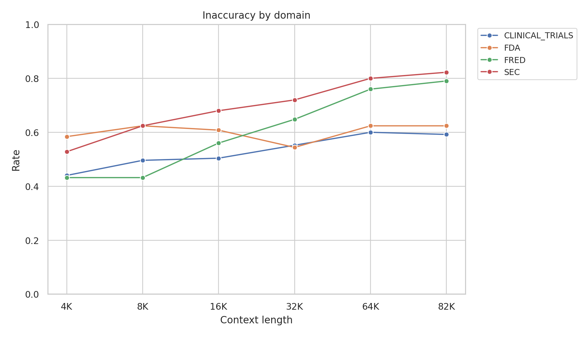
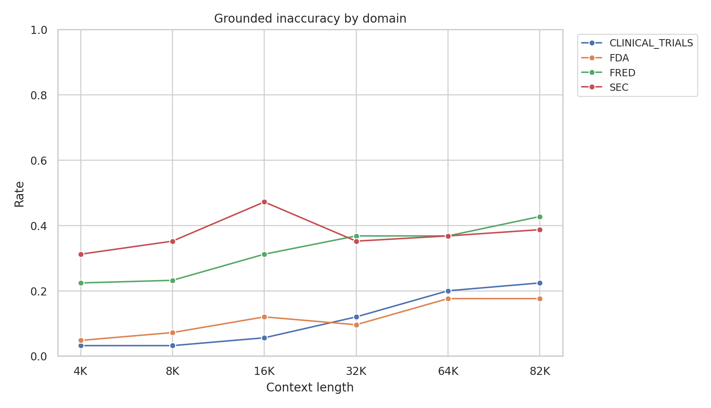
Table 12. Detailed error-type counts by context.
| Error Type | 4K | 8K | 16K | 32K | 64K | 82K | 82K - 4K |
|---|---|---|---|---|---|---|---|
| CALCULATION_ERROR | 12 | 9 | 8 | 12 | 14 | 13 | 1 |
| FAILED_TO_ABSTAIN | 49 | 51 | 62 | 77 | 99 | 97 | 48 |
| UNNECESSARY_ABSTENTION | 11 | 5 | 20 | 8 | 12 | 10 | -1 |
| UNSUPPORTED_VALUE | 122 | 135 | 112 | 114 | 110 | 104 | -18 |
| WRONG_ENTITY | 32 | 45 | 44 | 42 | 43 | 47 | 15 |
| WRONG_FIELD | 1 | 1 | 4 | 6 | 12 | 15 | 14 |
| WRONG_PERIOD | 6 | 10 | 19 | 19 | 35 | 45 | 39 |
| WRONG_SERIES_VARIANT | 2 | 3 | 2 | 3 | 1 | 2 | 0 |
| WRONG_UNIT | 3 | 2 | 0 | 2 | 0 | 1 | -2 |
| WRONG_VERSION | 10 | 11 | 23 | 25 | 22 | 18 | 8 |
The largest 4K-to-82K increases were FAILED_TO_ABSTAIN (+48), WRONG_PERIOD (+39), WRONG_ENTITY (+15), and WRONG_FIELD (+14). UNSUPPORTED_VALUE decreased by 18. The growth in total inaccuracy is therefore substantially driven by abstention failure and contextual misbinding.
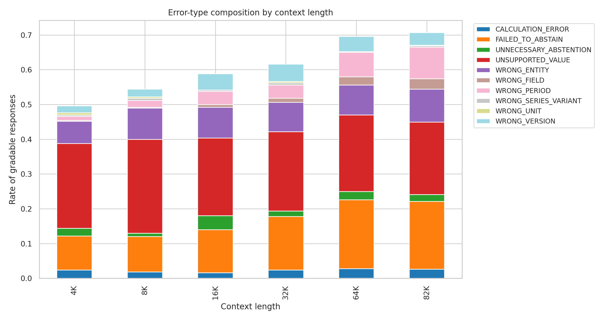
Table 13. Inference latency by context.
| Context | N | Mean | Median | P95 | P99 | Mean Input Tokens | Mean Output Tokens |
|---|---|---|---|---|---|---|---|
| 4K | 500 | 0.316 s | 0.315 s | 0.350 s | 0.355 s | 4,273.3 | 8.4 |
| 8K | 500 | 0.598 s | 0.597 s | 0.635 s | 0.641 s | 8,330.5 | 8.3 |
| 16K | 500 | 1.212 s | 1.211 s | 1.260 s | 1.268 s | 16,442.3 | 8.3 |
| 32K | 500 | 2.842 s | 2.832 s | 2.938 s | 2.944 s | 32,671.4 | 8.3 |
| 64K | 500 | 7.827 s | 7.804 s | 7.959 s | 7.968 s | 65,126.1 | 8.2 |
| 82K | 498 | 11.260 s | 11.251 s | 11.385 s | 11.409 s | 81,745.1 | 8.3 |
Inference latency increased sharply with context length. This report does not claim latency causes factual errors.
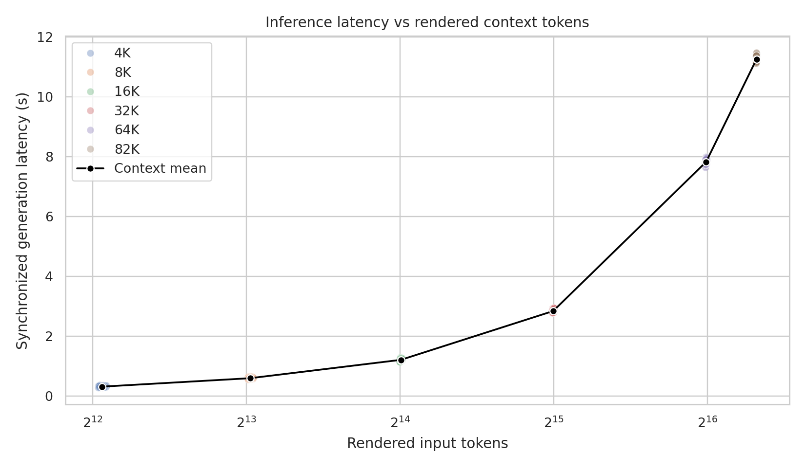
Family-level trajectories were heterogeneous, including always-correct, always-inaccurate, first-failure-at-longer-context, and non-monotonic patterns.
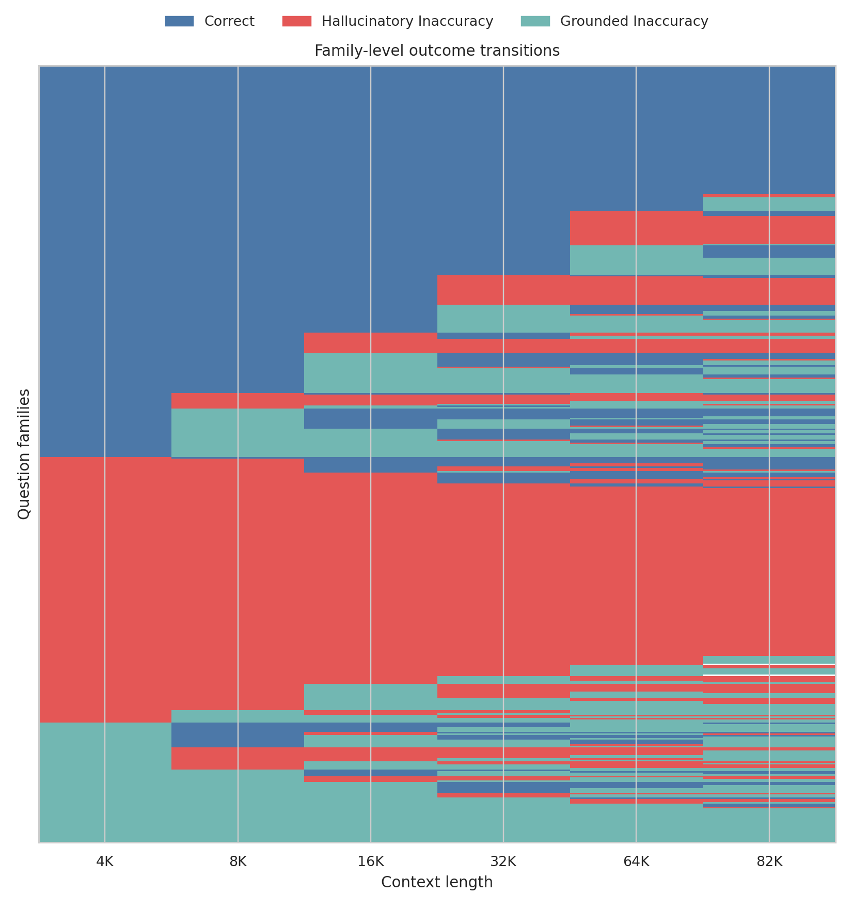
Increasing context length substantially reduces factual reliability. The degradation is not captured adequately by a single hallucination metric. More context introduces more authentic competing information, and the model increasingly selects, binds, or reasons over legitimate but incorrect contextual records. This grounded contextual-confusion mechanism is distinct from classical unsupported hallucination.
The full dataset shows increasing Hallucinatory Inaccuracy, but the sensitivity analysis demonstrates that this is driven primarily by failed abstention on unanswerable questions. On answerable factual tasks, Hallucinatory Inaccuracy decreases while Grounded Inaccuracy increases.
Inaccuracy increased from 49.6% at 4K to 70.7% at 82K. The primary GEE model estimated an inaccuracy OR of 1.232 per context doubling, p = 8.66 x 10^-20. Grounded Inaccuracy increased from 15.4% to 30.3%, OR 1.215, p = 3.34 x 10^-13. Hallucinatory Inaccuracy increased from 34.2% to 40.4% in the full dataset, OR 1.070, p = 0.00133, but excluding unanswerable tasks reversed that trend, OR 0.942, p = 0.00275.
Increasing context length substantially reduces factual reliability. The most robust mechanism on answerable factual tasks is an increase in grounded contextual confusion rather than an increase in unsupported fabrication.
8fa4fd3b990adf54b6f7790ed6defa9c5d89aa6dd8365e0a7519beeb44d985e8155f80ec3bf284a7928ede0d24b491a972540b77dfe01d98eb622825c9c06a78dc2c4194dedb090198e6883735257908ce274bebc8611b40d958dbd026aa1fe6d9282a0ccc50daba3bfd232c058dfbab63a5c19a7323d585a7c2236b3a6c4ba85d2869822989e19b0cb88a4f764b7a12671c53f0838cd831a0843b95